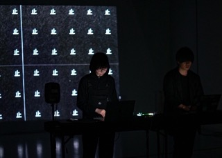
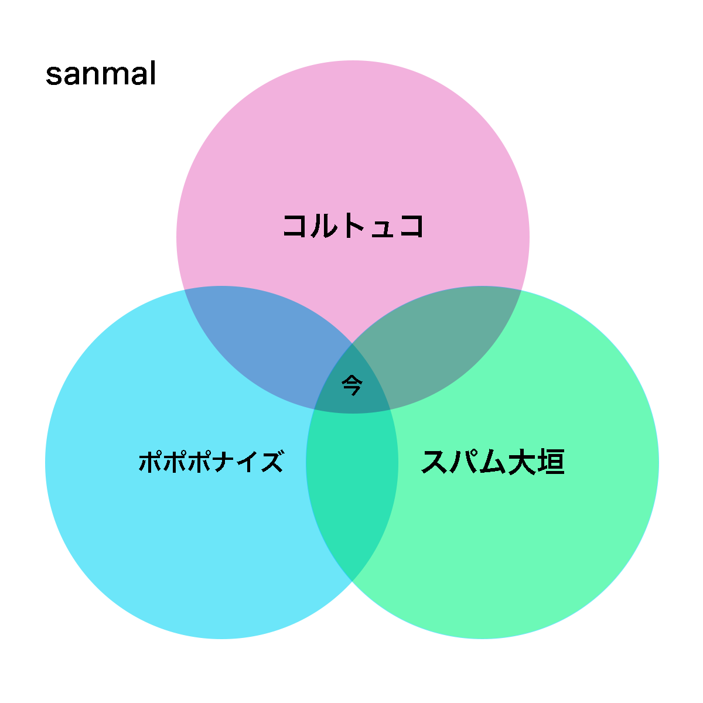
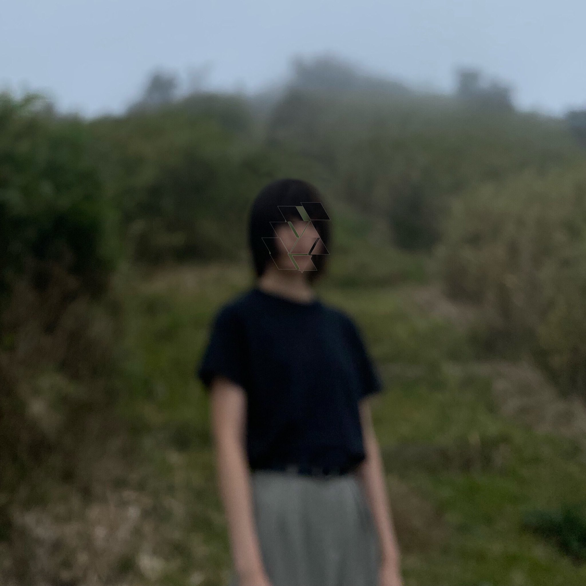

About
主催：NxPC.Lab

NxPC.Labは、クラブやライブにおけるアーティストと観客の相互作用によってもたらされる場の臨場感を拡大し、ネットへも拡散させるためのメディアテクノロジーの実現を目指した研究機関です。
現代のメディア体験において必要とされる対話性、参加性をデバイス、インタフェース、ネットワークといったメディアテクノロジーを駆使することで、音楽体験を拡張し、音楽空間におけるコミュニケーションを次のステージへ導くための研究開発、イベントを実施しています。実験の場としてのイベントNxPC.Liveを中心に、レクチャーやワークショップ、ネットラジオなどの活動を行っています。
Info
NxPC.Live vol.56
屋台再開 あせだくつゆだく暑い夏
Schedule
| Date | 2022.7.23 Sat. | 2022.7.24 Sun. |
|---|---|---|
| Open | 17:50 | 17:50 |
| Start | 18:00~ | 18:00~ |
| Close | 20:10 | 20:40 |
Live Streaming
Timetable
| 7 / 23 (Sat.) | Performer |
|---|---|
| 18:00~ | コルポナ大垣mal |
| 18:40~ | ルレン |
| 19:05~ | 線対称 |
| 19:30~ | uku kasai / VJ JACKSON kaki, futa takezawa |
| 20:10 | Close |
| 7 / 24 (Sun.) | Performer |
|---|---|
| 18:00~ | 作業用BGM |
| 18:40~ | 書記ユニット |
| 19:20~ | うるちぬ |
| 19:45~ | Ryu Ishizuka |
| 20:10~ | zumisio |
| 20:40 | Close |
Performers

コルポナ大垣mal
出会って4秒で結成

ルレン
ナイス

線対称
アンビエント歩行

uku kasai
東京よりProducer / Singerのuku kasaiをゲストに招いて、JACKSON kaki/futa takezawaと共にオーディオビジュアルのセットを披露します。

Jackson KAKI
VJ

futa takezawa
VJ

作業用BGM
作業用BGMを演奏するグループです。 マウスを複数個PCに接続して、それぞれのクリックに音を割り当てたシステムを使用して演奏します。演奏者は交換可能です。 今回はゲーム中に演奏します。対戦も可能です。

書紀ユニット
建築します！！
うるちぬ
歯茎

Ryu Ishizuka
Talkbox performance（electro funk music）
書紀ユニット
建築します！！

zumisio
水のサンプリング